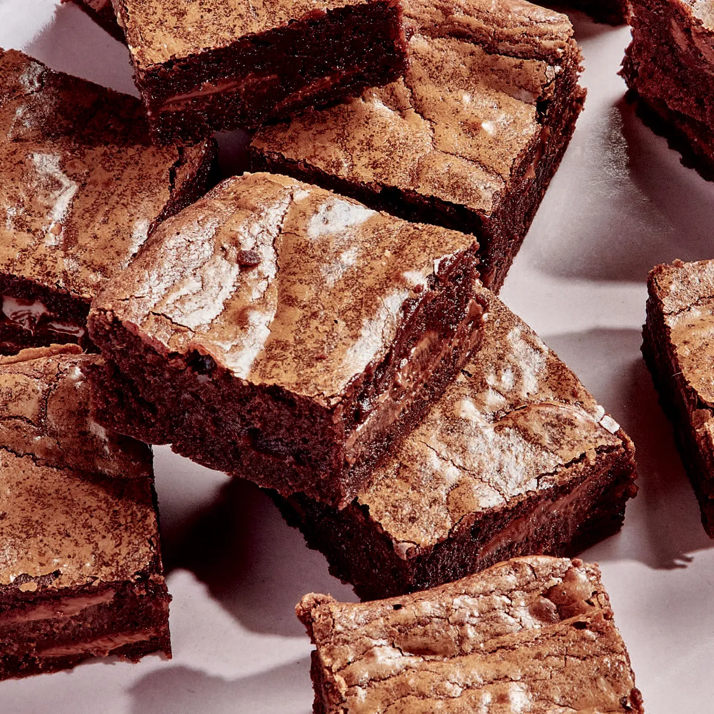

How to make Malted “Forever” Brownies

Learn how to make the chocolate chip cookie that started it all! Our original NESTLÉ® TOLL HOUSE® chocolate chip cookie recipe is perfect for all occasions!
Ingredients
- Butter for the pan
- 1/4 cup Dutch process cocoa powder (0.7 oz / 20g)
- 5 ounces (142g) semisweet chocolate (preferably 64 to 68% cacao), coarsely chopped
- 6 tablespoons unsalted butter (3 oz / 85g), cut into pieces
- 1/4 cup neutral oil, such as vegetable or grapeseed (2 oz / 56g)
- 1/2 cup granulated sugar (3.5 oz / 100g)
- 1/2 cup packed dark brown sugar (3.5 oz / 100g)
- 1 large egg (1.8 oz / 50g)
- 2 large egg yolks (1.1 oz / 32g)
- 1+1/2 teaspoons vanilla extract
- 3/4 cup all-purpose flour (3.5 oz / 100g)
- 2 tablespoons malted milk powder (0.63 oz / 18g) (optional)
- 1 teaspoon Diamond Crystal kosher salt (0.11 oz / 3g)
- 6 ounces (170g) milk chocolate, coarsely chopped (1 cup)
Steps
- Preheat the oven and prepare the pan: Arrange an oven rack in the center position and preheat the oven to 350°F. Line an 8 x 8-inch pan with 2 sheets of foil, crossing one over the other and pressing the foil into the corners and up the sides. Lightly butter the foil and set aside.
- Bloom the cocoa: In a large heatproof bowl, whisk the cocoa powder and ¼ cup boiling water (4 oz / 113g) until smooth (this will bring out the flavor of the cocoa).
- Melt the chocolate, butter, and oil: Add the semisweet chocolate, butter, and oil to the bowl with the cocoa mixture and set it over a medium saucepan filled with about 1 inch of simmering (not boiling) water (make sure the bottom of the bowl isn't touching the water). Warm the mixture gently, stirring occasionally, until the chocolate and butter are melted and the mixture is smooth. Remove the bowl from the heat and let cool until lukewarm.
- Add the sugars and egg: Whisk the granulated and brown sugars into the chocolate mixture. It will look grainy and you might see some of the fat start to separate from the rest of the mixture, which is normal. Add the whole egg, egg yolks, and vanilla and whisk vigorously until the mixture comes back together and looks very thick, smooth, and glossy.
- Add the dry ingredients: Add the flour, malted milk powder (if using), and salt and whisk slowly until everything is combined, then whisk more vigorously until the batter is very thick, a full 45 seconds.
- Fold in the chocolate and bake: Add the milk chocolate to the batter and fold with a flexible spatula to distribute. Scrape the batter into the prepared pan, spreading in an even layer all the way to the corners.
- Bake the brownies until the surface is shiny and puffed and the center is dry to the touch but still soft when pressed, 25 to 30 minutes.
- Cool, chill, and cut: Allow the brownies to cool in the pan until they are no longer hot, about 1 hour, then refrigerate until the bottom of the pan feels cold, about 1 hour longer (this results in a chewier texture). Use the ends of the foil to lift the brownies out of the pan and transfer to a cutting board. Slice the brownies into 16 squares.
Cook's Notes
- If you don't have an 8 x 8-inch pan, double the recipe and bake these in a 13 x 9-inch. If doubling the recipe makes more than you need, freeze the rest!